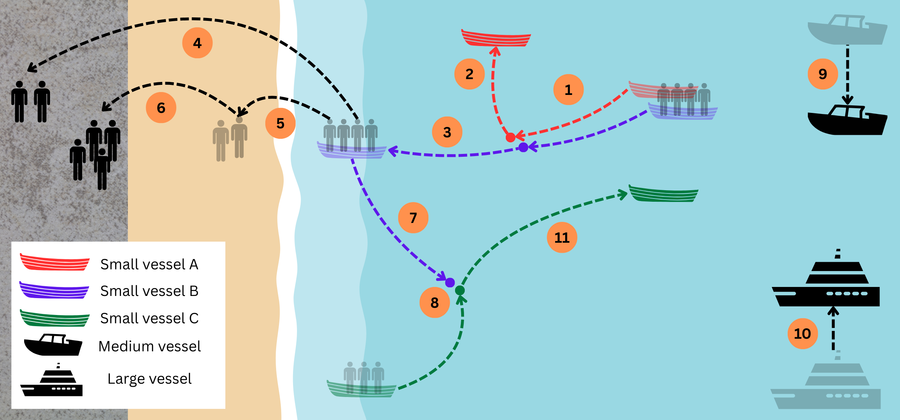
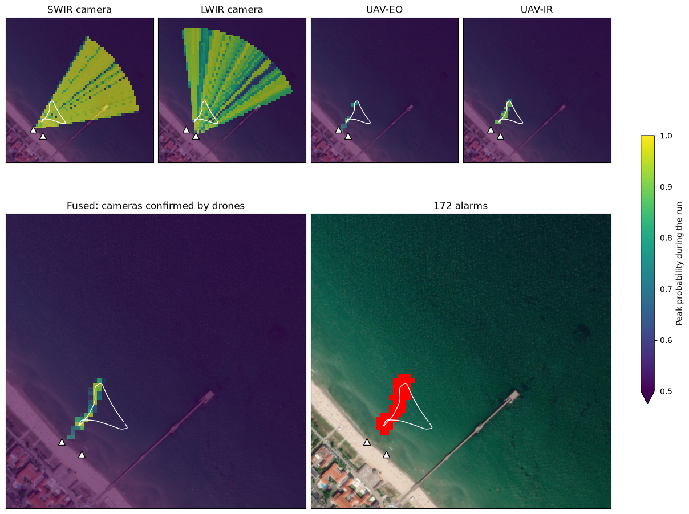

Maritime border security#
Field-tested
Use cases: Irregular migration Smuggling Vessel detection
Detection of vessels and people at sea and along the coast, combining coastal cameras with drones.
At a glance#

Scenarios 1 to 3 of the experiment; the numbers give the order of events. Adapted, with permission, from K. Wohlleben et al., “Enhancing Maritime Situational Awareness through Multimodal Fusion: Insights from a Real-World Experiment,” 2025 Sensor Data Fusion: Trends, Solutions, Applications (SDF), 2025. © 2025 IEEE.#
Objects of interest |
Small, medium and large vessels, and people landing on the shore |
Sensors |
Coastal short-wave and long-wave infrared cameras (SWIR, LWIR) on poles about 6 m high; drones with a visible-light camera (UAV-EO) and a thermal camera (UAV-IR) |
Platform |
Fixed and mobile: coastal cameras that only change orientation, and drones that move freely |
Setting |
Controlled real-world experiment: a live demonstration recorded over two days, six scenarios |
How MuFASA was used |
Exploring fusion graphs on live data, adapting the graph to the environment during operation |
How MuFASA was used#
Exploring graph variants. We tried several Fusion Graphs during the experiment: the drones alone, all sensors fused, and the cameras confirmed by the drones. Each variant differs from the last in a few lines, because every step is an explicit node. The variant the experiment settled on is shown in The Fusion Graph, and Try it looks inside it.
Adapting the graph during operation. After the sensors were integrated, the graphs ran online. The same graph that is developed on recorded data goes live by exchanging the file input nodes for streaming input nodes. In this case, MQTT was used as a messaging broker system. From then on, only the configuration, i.e. the graph, changed. A new graph is in place within seconds, so the system can be adapted to an environment that isn’t known in advance.
The Fusion Graph#
In the graph the experiment settled on, each sensor accumulates its detections into a probability map (POM). A LogicalAnd combines every coastal camera with every drone, so it only reports where both see something. BayesianFusion joins the four combinations, and a Threshold turns the result into alarms, collected by a LocationOutput. In the experiment, this graph had far fewer false alarms than the drones alone (Wohlleben et al., SDF 2025).
from mufasa import BoundingBox, Graph
from mufasa.io.inputs import GeoJsonInput
from mufasa.io.outputs import LocationOutput
from mufasa.nodes import POM, LogicalAnd, BayesianFusion, Threshold
# Input nodes: coastal cameras and drones
swir = GeoJsonInput("swir.geojson")
lwir = GeoJsonInput("lwir.geojson")
uav_eo = GeoJsonInput("uav_eo.geojson")
uav_ir = GeoJsonInput("uav_ir.geojson")
# Processing nodes: one probability map per sensor ...
pom_swir = POM(decay_s=0.2, prior=0.3)(swir)
pom_lwir = POM(decay_s=0.2, prior=0.3)(lwir)
pom_uav_eo = POM(decay_s=1, prior=0.5)(uav_eo)
pom_uav_ir = POM(decay_s=1, prior=0.25)(uav_ir)
# ... every camera confirmed by every drone ...
swir_and_eo = LogicalAnd()(pom_swir, pom_uav_eo)
swir_and_ir = LogicalAnd()(pom_swir, pom_uav_ir)
lwir_and_eo = LogicalAnd()(pom_lwir, pom_uav_eo)
lwir_and_ir = LogicalAnd()(pom_lwir, pom_uav_ir)
# ... and the four confirmations fused
fused = BayesianFusion()(swir_and_eo, swir_and_ir, lwir_and_eo, lwir_and_ir)
alarms = Threshold(threshold=0.8, alarm_timeout_s=0.5, dilation_px=1)(fused)
# Output node: collects the alarms
out = LocationOutput()(alarms)
graph = Graph(
inputs=[swir, lwir, uav_eo, uav_ir],
outputs=[out],
crs="EPSG:32633",
bbox=BoundingBox(13.6118, 54.4017, 13.6222, 54.4079),
resolution=(10, 10),
)
graph.plot_graph()
Try it#
To see the graph in action, we generated synthetic data from the knowledge we have developed during the experiment. It replays a single movement of the scenarios above. A small boat with people aboard approaches the beach, lies off it for about half a minute and heads back out to sea (step 7 of the figure). The site is a fictitious one with the
layout of the trial. The detections are invented but behave like the trial’s sensors. The cameras report a narrow
cone in the direction of the boat many times per second, reaching far beyond it. The drones report the boat’s
position precisely, but only now and then. The SWIR camera also picks up people on the pier, and the UAV-EO a boat lying on the beach. You can download the files to run the code above yourself:
swir.geojson,
lwir.geojson,
uav_eo.geojson,
uav_ir.geojson, and the boat’s true path
ground_truth.geojson.
The following figure looks inside the graph above, through a Visualization node. Each camera’s probability map lights up a whole wedge of the sea, while the drones only mark small spots where they saw the boat. The LogicalAnd nodes keep only the places where a camera and a drone agree, so the fused map and the alarms follow the boat’s path (white line). The triangles mark the two camera poles.

Satellite imagery: Esri, i-cubed, USDA, USGS, AEX, GeoEye, Getmapping, Aerogrid, IGN, IGP, UPR-EGP, and the GIS User Community.
Tip
Experiment with it: fuse the four probability maps directly, BayesianFusion()(pom_swir, pom_lwir, pom_uav_eo, pom_uav_ir), and see how many alarms the cameras raise without confirmation. Or pair only the SWIR camera with the
drones, or change a prior or the threshold. To follow the boat over time, add a
KalmanTracker after the threshold.
References#
Project: EURMARS, funded by the European Union’s Horizon Europe research and innovation programme under grant agreement no. 101073985.
Publications:
K. Wohlleben, M. Hubner, T. Markchom, J. Boyle, J. Ferryman, S. Veigl, A. Opitz, A. Gkamaris, and R. Bratskas, “Enhancing maritime situational awareness through multimodal fusion: Insights from a real-world experiment,” IEEE Sensor Data Fusion: Trends, Solutions, Applications (SDF), 2025. doi:10.1109/SDF67080.2025.11331253
T. Markchom, O. Kourounioti, M. Marturini, R. Bratskas, K. Wohlleben, J. Boyle, L. Chen, G. Voskopoulos, C. Kontopoulos, S. Veigl, A. Opitz, A. Gkamaris, D. Papachristos, D. Lunic, J. Ferryman, A. Kriechbaum-Zabini, and G. Leventakis, “Multialtitude, multimodal maritime surveillance system,” IEEE Sensors Journal, vol. 26, pp. 7101–7119, 2026. doi:10.1109/JSEN.2025.3649549
L. Patino, M. Hubner, R. King, M. Litzenberger, L. Roupioz, K. Michon, L. Szklarski, J. Pegoraro, N. Stoianov, and J. Ferryman, “Fusion of heterogenous sensor data in border surveillance,” Sensors, vol. 22, p. 7351, 2022. doi:10.3390/s22197351